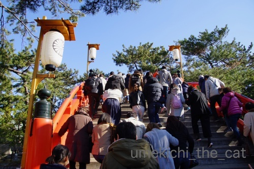
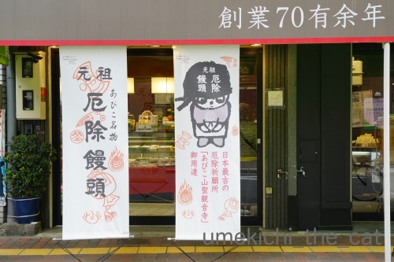
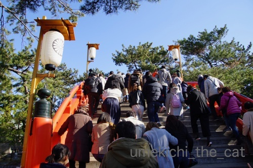
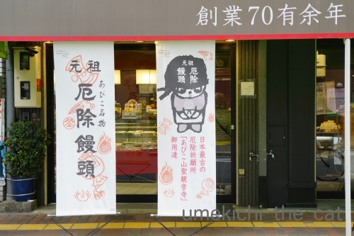

そしてブロックはこうなった〜年末年始のまとめその２〜 [梅吉]
前記事の発泡スチロールのブロックは

接着剤でくっ付けて梅吉のあご乗せベッドになりました＾＾
ヘッドボード型にしようかとも思ったのですが収まりが良い様なので両翼型に。
一翼に貼ってある段ボールは
「お顔を乗せた時あごが落ちたらかわいそうだから・・・」とのおっとの気遣いですが
穴は大事なお遊びアイテムなのでもう一翼のはそのままに。
新しいものに全く警戒しない梅吉さんが早速ご使用。
飼い主の思惑通りあご乗せてます！
おとーさん大喜びwww

ブロック4個で4.8kgの梅吉が使ってこのサイズ感。
空いているスペースに湯たんぽを仕込んだりできます。
（おちりの方のチェック柄が湯たんぽ＾＾）

日々ご使用![[手（チョキ）]](https://blog.ss-blog.jp/_images_e/87.gif)

あご乗せスペースにおててもプラス0(≧▽≦)0

梅吉の抜け殻。
ここに手を入れるとあったかくてサイコーです(๑˃̵ᴗ˂̵)و
ブロックの組み合わせ方次第でいろんな形・大きさの物が作れそうです。
今度は独創的な型のベッドに挑戦してみようかしら・・・
階段箪笥みたいなタワーもいいわねぇ・・・と膨らむ妄想w
 ↑ガブッと一押し↑
↑ガブッと一押し↑
1月2日。
運動不足にならぬ様お正月恒例の七福神巡り。
スタートは真田山の「三光神社」から。
その後、谷８「長久寺」、島之内「法案寺」、日本橋「大乗坊」、大国町「大国主神社」
恵美須「今宮戎神社」、天王寺「四天王寺」の順で巡って約９㎞。
ザ・ミナミな風景を横目で見ながら進みます。
ゴールの四天王寺は初詣の参詣客で溢れかえっておりました。
途中ランチをなんば付近でと思ったらどこも家族連れや若者でごった返している。
回転の早そうな店でランチ。
三が日はおせちをつつきながら家で（アナログ）ゲームでもしながら
家族で過ごすなんてのは昭和のノスタルジーなんだなぁとつくづく思う。
3日。
家で「プーと大人になった僕」を観る。
年明けなので心温まる映画を。
プーさんの穏やかな中に哀愁を帯びた眼差しと含蓄のあるお言葉に涙。
「なにもしない、の大切さ」と「なにもしない、で忙しい」を教えてもらう。
昔読んだ「タオのプーさん」を再読しなくちゃと図書館に貸し出し予約を入れる。
4日。
ようやくすみよっさんに初詣。

いつもは裏道・横道から敷地内に入りますが初詣なので太鼓橋を渡る。
4日午前中でもこの混雑。

この日は踏歌神事の日でもありました。
大黒さんと蛭子さんの掛け合い。釣竿持っているのが蛭子さん。
５日。
今年の厄除けをお願いしにあびこ観音へ。
お線香をお供えして厄がつかぬ様煙をガンガン浴びるw
ここまでの道のりも運動不足解消コース。寄り道しながら往復13000歩。
緋寒桜かなぁ？すでに葉が茂りはじめ。

名物厄除け饅頭を買いに。
このお店古びた感じがいい感じだったのですが小綺麗になってました。
店先にあったセイロも無くなっていてちょっと残念。
お饅頭は美味しいかった。
6日。
プーさんに習って何もしない、に忙しい日。
７日。
仕事始め。
すみよっさんを横切ったら神馬の白雪さんが馬房からお出ましに。
この日は白馬神事の日。
神事の前にウォーミングアップされていた様です。
最後に止まっているのは神殿に向かって拝礼する練習かと。
そんなこんなのお正月休みでした。

接着剤でくっ付けて梅吉のあご乗せベッドになりました＾＾
ヘッドボード型にしようかとも思ったのですが収まりが良い様なので両翼型に。
一翼に貼ってある段ボールは
「お顔を乗せた時あごが落ちたらかわいそうだから・・・」とのおっとの気遣いですが
穴は大事なお遊びアイテムなのでもう一翼のはそのままに。
新しいものに全く警戒しない梅吉さんが早速ご使用。
飼い主の思惑通りあご乗せてます！
おとーさん大喜びwww

ブロック4個で4.8kgの梅吉が使ってこのサイズ感。
空いているスペースに湯たんぽを仕込んだりできます。
（おちりの方のチェック柄が湯たんぽ＾＾）

日々ご使用

あご乗せスペースにおててもプラス0(≧▽≦)0

梅吉の抜け殻。
ここに手を入れるとあったかくてサイコーです(๑˃̵ᴗ˂̵)و
ブロックの組み合わせ方次第でいろんな形・大きさの物が作れそうです。
今度は独創的な型のベッドに挑戦してみようかしら・・・
階段箪笥みたいなタワーもいいわねぇ・・・と膨らむ妄想w
1月2日。
運動不足にならぬ様お正月恒例の七福神巡り。
スタートは真田山の「三光神社」から。
その後、谷８「長久寺」、島之内「法案寺」、日本橋「大乗坊」、大国町「大国主神社」
恵美須「今宮戎神社」、天王寺「四天王寺」の順で巡って約９㎞。
ザ・ミナミな風景を横目で見ながら進みます。
ゴールの四天王寺は初詣の参詣客で溢れかえっておりました。
途中ランチをなんば付近でと思ったらどこも家族連れや若者でごった返している。
回転の早そうな店でランチ。
三が日はおせちをつつきながら家で（アナログ）ゲームでもしながら
家族で過ごすなんてのは昭和のノスタルジーなんだなぁとつくづく思う。
3日。
家で「プーと大人になった僕」を観る。
年明けなので心温まる映画を。
プーさんの穏やかな中に哀愁を帯びた眼差しと含蓄のあるお言葉に涙。
「なにもしない、の大切さ」と「なにもしない、で忙しい」を教えてもらう。
昔読んだ「タオのプーさん」を再読しなくちゃと図書館に貸し出し予約を入れる。
4日。
ようやくすみよっさんに初詣。

いつもは裏道・横道から敷地内に入りますが初詣なので太鼓橋を渡る。
4日午前中でもこの混雑。

この日は踏歌神事の日でもありました。
大黒さんと蛭子さんの掛け合い。釣竿持っているのが蛭子さん。
５日。
今年の厄除けをお願いしにあびこ観音へ。
お線香をお供えして厄がつかぬ様煙をガンガン浴びるw
ここまでの道のりも運動不足解消コース。寄り道しながら往復13000歩。
緋寒桜かなぁ？すでに葉が茂りはじめ。

名物厄除け饅頭を買いに。
このお店古びた感じがいい感じだったのですが小綺麗になってました。
店先にあったセイロも無くなっていてちょっと残念。
お饅頭は美味しいかった。
6日。
プーさんに習って何もしない、に忙しい日。
７日。
仕事始め。
すみよっさんを横切ったら神馬の白雪さんが馬房からお出ましに。
この日は白馬神事の日。
神事の前にウォーミングアップされていた様です。
最後に止まっているのは神殿に向かって拝礼する練習かと。
そんなこんなのお正月休みでした。

カフェオレ色の梅吉

梅吉 2023年8月10日 永眠


梅吉と出会った譲渡会

犬猫の理由なき殺処分ゼロ
妄想広告
UMEKICHI 光

爆発的に早い！
時々攻撃的！
Thanks to Mr.Boss365
爆発的に早い！
時々攻撃的！
Thanks to Mr.Boss365

梅吉さんのベッドはたっぷりの大きさでフカフカぬくぬく贅沢ですね。
七福神めぐりも厄除けもしてなかなか良い感じのお正月をお過ごしの様子。良い年になりそう。私も白雪さんの歩くところを見られてちょっと福のおすそ分けをいただいた気分です。
by zombiekong (2019-01-14 00:16)
発泡スチロールって、接着剤でくっつきましたっけ？
しかし、めっちゃ良いサイズで組み立てられましたね＾＾
我が家のトロ箱はどんどん変形してますよ＾＾；
by ぽちの輔 (2019-01-14 06:28)
素晴らしいベッド？に仕上りましたね(^^)
梅吉さん、ご満悦の様子が伝わってきます。
幸せそうですね～
by kou (2019-01-14 07:50)
立派なベットができましたね。
このブロックは丈夫ですよ。
私、乾燥機を覗くのに一時期足乗せに使っていました。
ビクともしません。
梅吉さんが10人いらしても大丈夫です（笑）
梅吉さん、自分用だとわかるのがすごいと思いました。
もう馴染んでいますね。
顎乗せて、両手も添えて、フカフカで気持ちが良いでしょう（笑）
梅吉さんの抜け殻、ちぃさん入って御覧なさい、至福の暖かさですよ（笑）
by kiki (2019-01-14 08:33)
なんて素敵で暖かそうなBED♪( ´▽｀)
お父さんの愛を感じますねぇ=(^.^)=
梅吉さんもとっても満足そうに楽しんでらっしゃるのですね( ^ω^ )
うちも作ってみようかな（かみさんがw）＾＾
ただ、問題は使ってくれるか？ということと
気に入った場合、４ニャン分を置く場所に悩むってことかな(⌒-⌒; )
by ニッキー (2019-01-14 10:28)
ヌクヌク生活～！梅吉さん、幸せ至福の時ですにゃあ^^
by ニコニコファイト (2019-01-14 10:55)
発泡スチロールのブロックは梅吉さんのベッドになったのですね！
暖かくて冬にはぴったりですね(^^)
by ma2ma2 (2019-01-14 10:57)
あご乗せ台つきベッド、バッチリですね(#^^#)
ブロックon猫手onあご写真、最高に可愛らしいです♪
ウチのは上から毛布などかけられるのが大嫌いなので、保温のためには屋根付きにしなきゃな・・・^^;
発泡スチロールが爪とぎ＆ガジガジに最適だと梅吉さんが気が付かないことを祈ります。
1月4日、平日でも太鼓橋はこの状態なのですね！
さすが住吉さん。
最近はイベントの交通規制が厳しくなりました。花火大会でも一方通行で恐ろしく遠回りさせられて以来、足が遠のきました。
by ゆきち (2019-01-14 11:10)
こんにちは。
立派なベット完成！！梅吉君・満足顔になっています。
お城等にある「屋根付きベット」にもなりそうです。妄想は大切！！
おとーさんはブロック名人です。ナイスアイデアに脱帽です！！
２日の「七福神巡り」は混んでいる中のお詣りに凄いパワーを感じます。
「プーと大人になった僕」は観たかった映画・・・
大人も観れるディズニー映画はメッセージ「てんこ盛り」で楽しいです！？(=^･ｪ･^=)
by Boss365 (2019-01-14 13:18)
さっきね、ホームセンターに行ったら
まさにこの発泡スチロールのブロックが売られていたの！
「ちぃさんところは、これを何に使ったんだろう−」って思って居たけど
まさかまさかの、こんな素敵な梅吉くんベッドになったとは！
これは良いね〜。居心地良いだろうなー^^
神馬の白雪さん、神々しいわ！！
by リュカ (2019-01-14 15:09)
すごい！素敵！素敵！
発泡スチロールのレンガはベッドになったのね。
しかもあご乗せ台付き。
にゃんこってあんまり飼い主に頑張った甲斐を感じさせてくれないものですが・・・。
これは嬉しくて涙がでちゃうレベルでしょ(≧▽≦)
後はこの形を維持できるように。
梅吉くん自分でベッドに彫刻したりしないでね(*^-^*)
厄除けもばっちり！きっと素晴らしい１年になりますね。
by emi (2019-01-14 15:11)
素晴らしい～梅吉さんのあご乗せベッド！
おてても乗っけて可愛い～♪
いたれりつくせりをちゃんと満喫してくれてますね＾＾
運動不足も解消しての素敵なお正月！
丁寧に過ごされるんですね～。
白雪さんが拝めて嬉しいです＾＾
by sana (2019-01-14 17:03)
ブロックであごのせベッド！
予想外の展開でしたー
by ryang (2019-01-14 17:57)
にゃるほど～
良いベッドが出来て良かったニャ～
by 英ちゃん (2019-01-14 18:28)
おとーさんの日曜大工！（*´∀｀*）
なるほど、発泡スチロールなら保温性もあるしフィット感もいいし
アイディア大賞ですね！
お布団が乗っているさまは、まるで本物のベッドのようです。
そして何より・・・「コレジャナイ」じゃなくて良かったですね！（笑）
by Ja-Kou66 (2019-01-14 18:45)
ステキなベッドが出来上がりましたね♪
って早速使ってくれる梅吉さんは
本当に良い子です(#^.^#)
旦那様の気持ちも梅吉さんに
届きて喜びで嬉しいですよね！
by きぃ (2019-01-14 18:48)
おお、これは良いベッドを作ってもらえましたね、梅吉さん。
とても暖かそうですね。
13000歩はすごいですね！
なかなか10000歩以上は歩けません。
by yes_hama (2019-01-14 21:57)
梅吉さんは幸せ者の猫さんですね。
愛情を感じます。
抜け殻に手を入れて梅吉さんの体温を感じてみたい＾＾
by riverwalk (2019-01-14 21:58)
おおー！こういう展開でしたか！
あごの高さとか絶妙やん。
おとーさん、グッジョブ！(≧∀≦)！
13000歩のお参り、お疲れ様でしたー！
by よーちゃん (2019-01-15 06:31)
マネージャーはいませんでしたが、ごついSPがガチリタイソンをガードしてました。
by ニコニコファイト (2019-01-15 06:32)
梅吉さんのあご乗せベッドになったのですね～♪
さっそく使用してくれるなんて嬉しすぎますね(^^
そりゃ~お父さんも大喜びしますよ。
七福神めぐり楽しそうですね。神戸にもあるのかしら調べてみよう(笑
神馬、さすがですね。カッコいい♪
すみよっさん、この橋！20歳くらいの時に渡りました。ものすごい人だらけで
渡るの怖かったです。
by marimo (2019-01-15 10:07)
zombiekongさん＞
たっぷりサイズなので寝相がだらしない季節になっても
イケるかしら・・・って思ってます。
伸びきってこのベットからはみ出る姿も楽しみです(*>艸<)
ぽちの輔さん＞
専用の接着剤を買ってきていましたよ＾＾
ブロックの隣に陳列してあったのかも！
このサイズ、ぽちの輔さんちのにゃんこさんたちも
山盛りになって乗れるかもw
kouさん＞
気に入ったのか毎日乗ってます！
ひやっとしないところも良いのでしょうねー＾＾
作った甲斐があったというものです。
kikiさん＞
ボンドの匂いが飛んでふわふわブランケットを乗せたら
「とうぜん」とばかりに座ってましたよ＾＾
もっともこれが私の何かであっても
「とうぜん」と自分のものにしていたでしょうw猫様ですから・・・
梅吉の抜け殻、私が入ったらそのまま冬眠しちゃいそうですw
梅吉の温もりと残り香で（湿っぽい匂いがします）
魅惑の世界がなんですよ・・・
ニッキーさん＞
発泡スチロールは冷やっこく無いので良いですね＾＾
湯たんぽを仕込んでいなくても積極的に使っておいでです。
これを4個は！
1個でも結構場所を取っているので4個だと丸々一部屋占領しそうです。
あ、でもとっても軽いので移動は簡単ですよー(≧▽≦)
ニコニコファイトさん＞
毎日ぬっくぬくですよー0(≧▽≦)0
本当に幸せそうな顔してベッドを使ってます！
マネージャーのドン・キング氏はいませんでしたかw
一緒だったらあの髪型に目が釘付けになってたかもしれませんね＾＾
ma2ma2さん＞
梅吉のぬくぬくベッドになりましたー！
冷やっこく無いので朝ごはんを食べた後は
ここに乗って毛づくろいをしています＾＾
ゆきちさん＞
こてつくんには雪だるまベッドがあるので大丈夫ですね！
頭上は覆われているけれど空間があるので
こてつくんのこだわりもちゃんと満たして完璧でーす(^_－)☆
発泡スチロール、屑が静電気であちこちに張り付いて大変そうなので
ガジガジだけは本当に勘弁して欲しいです(^_^;)
花火大会は大阪では一度も出かけたことがありません。
人混みもそうですが夜になってもあの暑さ・・・
エアコンの効いた涼しい部屋で遠くに小さく見える花火で我慢しますw
Boss365さん＞
まぁまぁ！
子供の頃に憧れた天蓋付きベッドにも出来ちゃいますね(*>艸<)
支柱立ててレース状の布で覆えば梅吉でもお姫様気分♪
妄想膨らみまくってますよー！
2日の七福神めぐり、四天王寺を覗くとそれほどの人でもなく
根性使わずにすみましたよw
一番パワーが必要だったのは難波付近のランチ混雑でした (-_-メ)
来年からはもう少し先に進んで違う界隈で食事をしようと
固く決意しました。
プーさんは年初めにはぴったりの映画でした。
最後は勧善懲悪的、胸のすく様な場面もありお勧めですよ！
リュカさん＞
ブロック、実物をご覧になりましたか＾＾
固くて丈夫なのよ〜。私が乗っても全然大丈夫でした。
そしてひやっとしないのがいいね！
梅吉はすっかりお気に入りでご飯を食べた後は
この上で毛づくろいしてます。
今年は神事には行かなかったのだけど
歩いている白雪さんにあえて嬉しかったでーす。
本当に偶然だったので（しかもすごい確率）
今年はラッキーなことがあるかもなんて勝手に思ってます！
emiさん＞
買ってきたのをみた時「何するんだろう？」って私も思ったのよ＾＾
まさかベッドになるとはねー。
冷やっとしないからかこの上でぼーっと上体起こしたまま
座っていることもよくあります。
おっとはそれはそれはご機嫌ですよ(*>艸<)
昨日はこのベッド用に買ってきたブランケットがフィットする様に
ゴム通してましたわwww
梅吉に尽くしてます！
初詣、厄除け、白雪さんと瑞兆揃い踏み！？
私もブログを見てくれた方々もみんなに良いことあるといいな♪
sanaさん＞
教えたわけでも無いのにちゃんとアゴ乗せてるのは
笑っちゃいました(*>艸<)
眠くなると丸まって寝るのでアゴ乗せは使ってないのですが
活用してくれているのは何よりです＾＾
お正月休みはとかく太りやすいので気をつけてますw
寒いですが風さえなければ歩くとちょうど良く感じるので
ずんずん歩いてます！
私も歩いている白雪さんが見れて嬉しかったです。
年初めに神馬を見ると良いことがあると言われている様なので
皆さんにも見てもらおうと思ってアップしました＾＾
ryangさん＞
そうなんです！なんとなんとのベッドでした。
我が家には猫ベッドって置いてないので
（カゴはあちこち置いてあります＾＾）
梅吉初めての専用ベッドです！
英ちゃんさん＞
なかなか良いベッドが出来上がりましたよ。
気に入って毎日ご使用です＾＾
Ja-Kou66さん＞
そうなんです！発泡スチロールって冷やっとしなくて良いですね＾＾
湯たんぽを仕込まなくてもこの上で過ごしているので
相当気に入っている様です。
綿入りの掛け布団があったらますますベッド感が強まりそうですよね！
アゴ乗せスペースをヘッドボードに見立てて
目覚ましとか本とかのミニチュア、置いちゃおうかしらw
そう！コレジャナイ・・・回避できましたが
ちょっと期待しませんでしたか？(*>艸<)
私はコレジャナイ顔、おもいっきり想像してましたwww
きぃさん＞
疑うことを知らない子なので（笑）すぐに使ってくれました＾＾
おっと、大喜びです！
おっとの気持ちは届いている様で
毎日がぶのお返しをもらっている様です0(≧▽≦)0
yes_hamaさん＞
発泡スチロールは冷やっこく無いのが良いですね＾＾
専用ブランケットも買ってもらって
毎日ぬくぬくとベッドに籠っております(*>艸<)
10000歩以上歩くとなると時間もそれなりにかかるので
お休みの日とかになってしまいますよね。
ちなみに2日の七福神めぐりでは家を出てから帰るまでも合わせると
15000歩くらいになりましたよー。
このお正月休みはよく歩きました(≧▽≦)
ポケGoにも褒められましたwww
riverwalkさん＞
我が家の場、合愛情は押し売り的でもあるのですが
梅吉はかまってちゃんなのでちょうど良い様です＾＾
梅吉の抜け殻には手も顔も入れて見てください！
ちょっと湿っぽい被毛の匂いがして落ち着きますよ(≧▽≦)
よーちゃん＞
アゴの高さ、あつらえた様にぴったりですよね！
実物は家の中で存在感ある大きさですが
梅吉は喜んでいるので良し！です＾＾
走れないので歩きで勝負しました！
七福神めぐりでは家から帰るまでも合わせて15000歩。
がんばりましたー0(≧▽≦)0
marimoさん＞
「わしのものやな」と当たり前の顔してお使いになりました＾＾
おそらくこれが私の何かでも
当たり前に梅吉のものになったと思われますが(*>艸<)
おっとはベッドを使っている梅吉に「お気に入りですね！」と
嬉しそうに声をかけていますよー。
神社やお寺もお客さんを（笑）呼ぶのに必死ですから
きっとたくさんの○○巡りがあると思いますよ。
楽しく回れて運動にもなる○○巡りが神戸にもあると良いですね♪
白雪さんのお出ましに会えたのは偶然すぎて
今年の私の運の強さを確信しました (๑•̀ㅂ•́)و✧
この動画を見ていただいた皆さんにもきっと良いことが！
by ちぃ (2019-01-15 21:36)
先生、お行儀が良い！
遅ればせながら、本年も何卒よろしくお願い申し上げます。
（＿ ＿)
by KENT0mg (2019-01-16 17:08)
こちらこそ！
本年もどうぞよろしくお願い致しますm(_ _)m
専用ベッド、ちゃんと乗って寝るんですよ！
そのうち天蓋つきになるかもー＾＾
by ちぃ (2019-01-16 21:50)